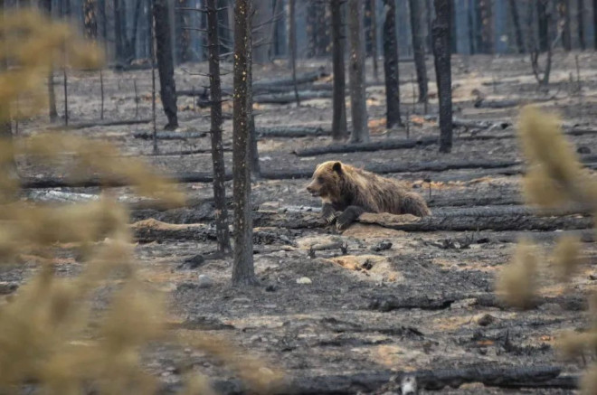
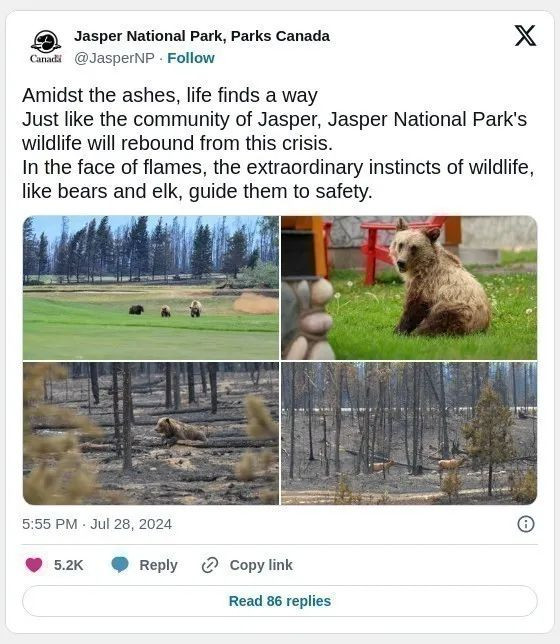
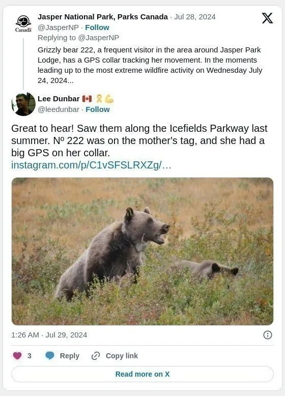
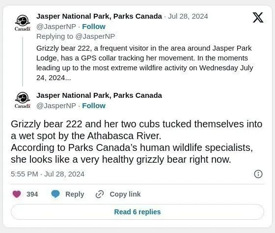
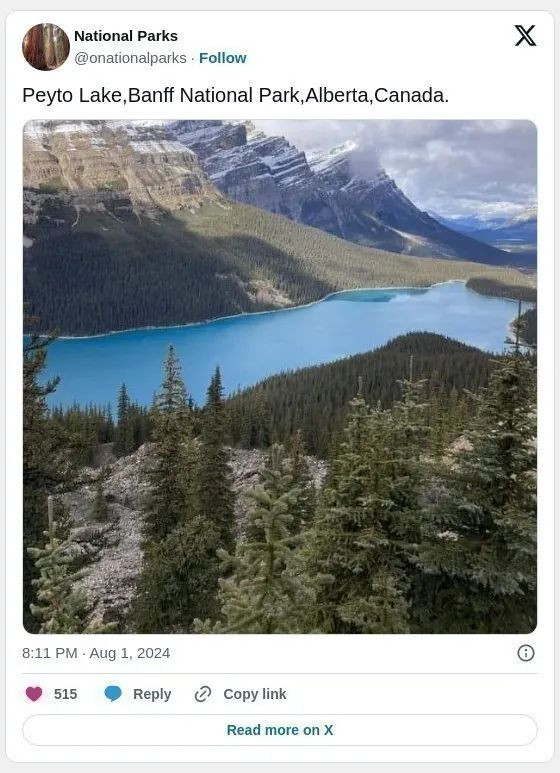
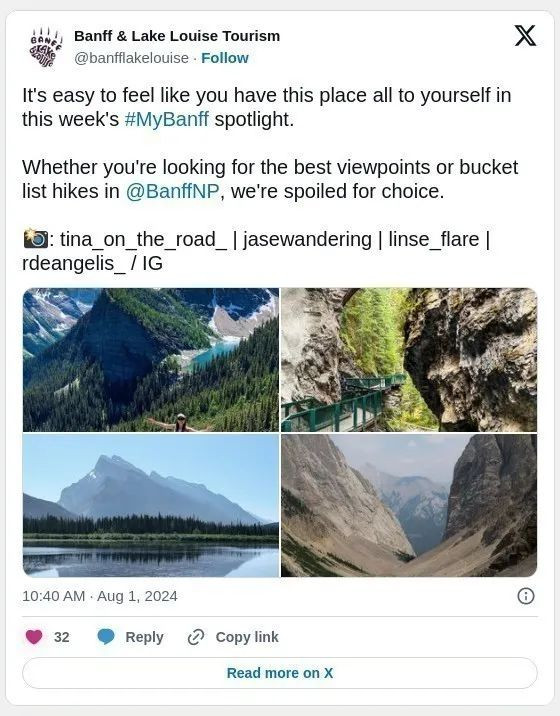
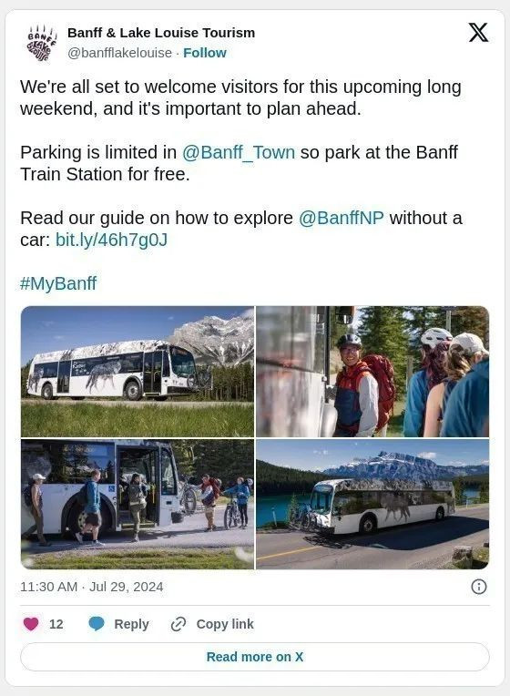

正当贾斯珀国家公园遭山火烧毁后正在重振中，阿尔伯塔州班夫和路易斯湖的旅游官员提醒游客，虽然贾斯珀国家公园因山火而关闭，班夫和路易斯湖仍开放营业。

贾斯珀国家公园最新发贴表示，在山火灰烬中，生命总能找到出路，就像贾斯珀社区一样，国家公园的野生动物也将从这场危机中恢复过来。
面对火焰，熊和麋鹿等野生动物与生俱来的非凡本能会引导它们逃向安全地带。

贾斯珀国家公园发贴称一只代号 222 为灰熊是贾斯珀公园旅馆附近的常客，它有一个 GPS 项圈来追踪它的活动。在 2024 年 7 月 24 日星期三最极端的山火即将来临之际…… 信号显示灰熊 222 和她的两只幼崽躲在阿萨巴斯卡河边的湿地里。

据加拿大公园管理局的人类野生动物专家称，她现在看起来像一只非常健康的灰熊。一直在贾斯珀公园旅馆高尔夫球场的边缘吃浆果和三叶草的混合物。
国家公园表示：“火灾是一个自然过程，我们希望动物能够找到新的栖息地。现有一个由 18 人组成的团队负责管理贾斯珀镇及其周边地区受山火影响的野生动物。“
动物的生命力超出了人类的想像。

最美的Peyto Lake似乎没有受山火影响。

班夫和路易斯湖仍然开放
班夫和路易斯湖旅游局在周四的新闻稿中表示，目前山火没有威胁落基山社区。
班夫和路易斯湖旅游局总裁兼首席执行官莱斯利·布鲁斯 (Leslie Bruce) 表示：贾斯珀最近发生的山火引起了一些游客的担忧，但可以保证，目前班夫和路易斯湖的公共安全或基础设施并没有受到山火威胁，鼓励游客于今年夏天前往班夫和路易斯湖旅行。
“我们认识到，对于许多人来说，这是你们特别的假期，我们希望尽我们所能帮助你们拥有难忘的经历。”

班夫和路易斯湖位于贾斯珀以南 200 多公里处，依靠旅游业来支持其经济以及在社区中生活和工作的数千人。
该旅游机构表示：“更广泛的旅游生态系统包括 750 多家企业，目的地 60% 以上的收入是在 5 月至 9 月期间。”

官员们表示，贾斯珀山火和该地区其他山火产生的烟雾正在该地区移动，但烟雾情况经常发生变化。
7 月 22 日，贾斯珀国家公园因山火侵袭社区而被疏散。目产疏散令仍然有效，贾斯珀山火群仍被列为失控状态。昨天周四，随着该地区气温开始升高，贾斯珀山火综合体面积又增加了 7,500 公顷。
目前火灾面积估计为 39,000 公顷。预计周五贾斯珀的气温将达到 31 摄氏度。
加拿大公园管理局在周四晚上的 Facebook 帖子中表示，火势蔓延主要发生在南部周边。该机构表示，由于天气持续炎热干燥，预计周五火势将进一步扩大。
火势仍被列为失控状态。
有关阿尔伯塔省山火疏散警报或命令的最新信息，请访问阿尔伯塔省紧急警报网站。